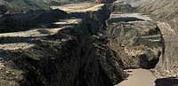
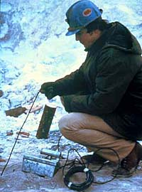
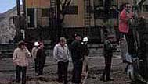
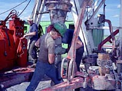

Geological History
Search, Exploration and Development
Mining & Economy
Careers
Activities
Quizzes
Glossary
|
|
Did you know that Saskatchewan was once covered by an inland sea which left a huge deposit of potash?
|
|
Geological History
 Saskatchewan is a province rich in mineral resources. The rocks and materials under us tell a story of our past. Find out how the types of rocks found on the surface can determine the minerals which lay beneath us.
Search, Exploration and Development  From Potash to Uranium. Is it true that diamonds can be found in Saskatchewan? Check out the minerals and materials mined in Saskatchewan. Learn how these are taken from the ground and the processing involved.
Mining and the Economy  Mining is good for the economy of Saskatchewan as a whole. Over 27,000 people are employed in this expanding industry. |
|
Careers
 Geologists, chemists, managers, heavy equipment operators and even cooks are employed by the mining industry. Perhaps there is a career for you in this industry.
Activities and Quizzes Go underground and discover the world of mining....or stay on the surface a find out how salt, clay or coal is taken from the earth. Enter a debate on uranium mining. Check out the many activities in which you may participate. Try the quiz section..you may surprise yourself!
Glossary and Terms What is the Blairmore Formation? What is pitchblende? Look here to find the meaning of mining terms.
|